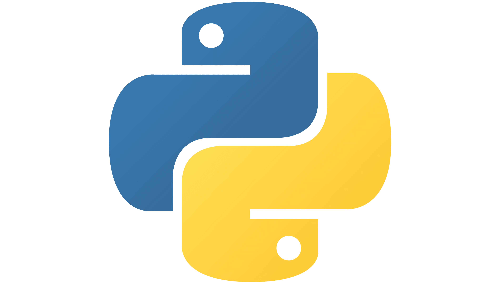
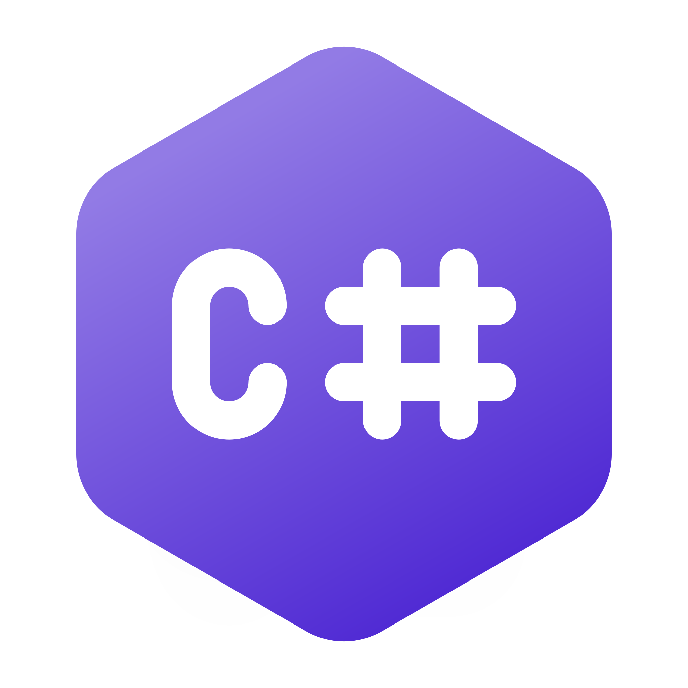
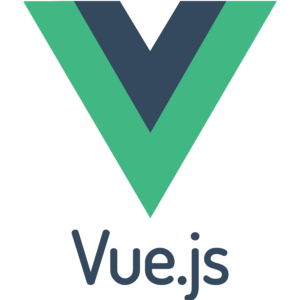
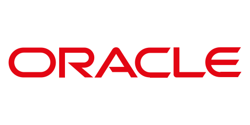
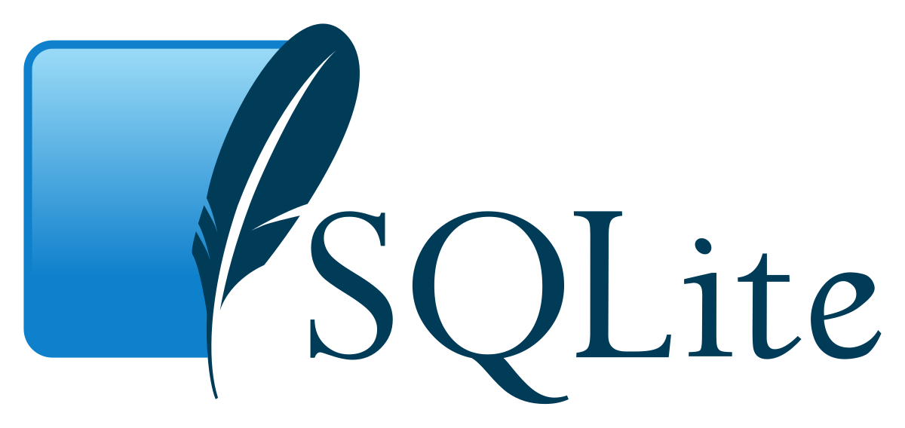
💡 Mes Projets
✨ Projets Personnels
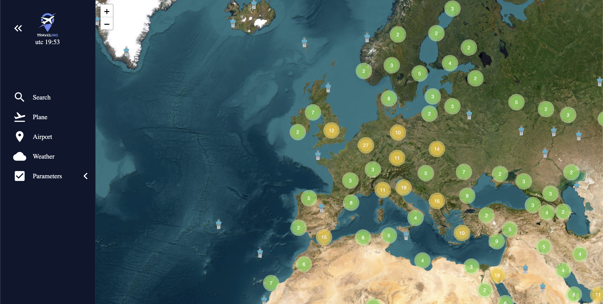
Flight Tracker
Développement d'un logiciel web permettant de visualiser les vols aériens en temps réel.
- Langages : VueJS, Python(FastAPI)
- Outils : Visual Studio Code, GitHub
- Durée : 130 heures
- En cours de programmation
Ce projet a pour but de permettre de visualiser les avions en temps réels ainsi que leurs données de vol. Les utilisateurs peuvent rechercher des vols spécifiques, suivre les itinéraires de vol, et obtenir des informations détaillées. Il est aussi possible d'avoir une visualisation des intempéries et données visuelles de la météo.
La gestion des aéroports a été un défi complexe car il a fallu réfléchir sur la méthode à appliquer pour ne pas surcharger la charge visuelles des utilisateurs. J'ai opté pour une méthode de clustering, regroupant les aéroports par région afin de simplifier leur affichage.
Ce projet m'a appris un nouveau framework ainsi que des concepts avancés en matière de visualisation de données.
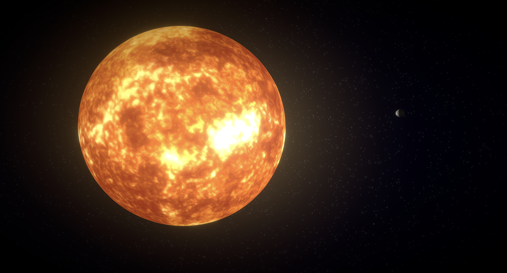
Ephemeris
Développement d'une application web permettant de simuler la navigation dans la système solaire.
- Langages : ReactJS, Python(FastAPI)
- Outils : Visual Studio Code, GitHub
- Durée : 170 heures
- En cours de programmation
J'ai construit Ephemeris pour répondre à une question simple : et si on pouvait vraiment se balader dans le système solaire depuis son navigateur ? L'application permet de se déplacer librement dans l'espace à la première personne comme si on flottait dans le vide.
Les planètes sont à leur vraie position angulaire aujourd'hui, elles tournent autour du Soleil à leur vitesse réelle, et chacune pivote sur elle-même à sa propre cadence. Une journée sur Terre dure 24 heures, une journée sur Mars dure 24h37, la simulation tourne en temps réel. Pour que l'exploration reste possible, les distances sont réduites proportionnellement selon un facteur d'échelle. Les rapports entre les planètes restent fidèles à la réalité, juste à une échelle humainement navigable.
On peut s'approcher de Jupiter pour voir ses bandes atmosphériques, longer la ceinture d'astéroïdes générée par instancing, ou partir à la recherche de Voyager 1, Voyager 2 et New Horizons qui continuent leur route à plus de 160 unités astronomiques du Soleil. Les huit planètes sont texturées avec des assets NASA et tous les effets visuels sont rendus en post-processing : bloom sur le Soleil, atmosphères planétaires. Toutes les données orbitales et physiques viennent d'APIs astronomiques officielles de la NASA.
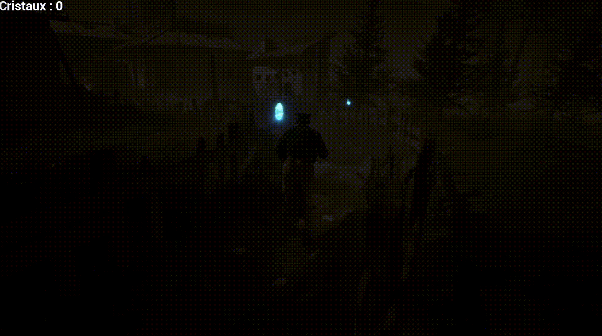
Crystal Chaser
Jeu-Vidéo permettant de récupérer les cristaux sans se faire attraper par un monstre dans un monde 3D.
- Langages : C++
- Outils : Unreal Engine 5
- Durée : 50 heures
Le jeu Crystal Chaser est un projet de jeu vidéo, conçu pour offrir une expérience immersive dans un monde 3D où les joueurs doivent collecter des cristaux tout en évitant un monstre. Le jeu met l'accent sur la stratégie et la rapidité, les joueurs peuvent s'attendre à des graphismes attrayants, une bande sonore captivante, et une jouabilité fluide grâce à l'utilisation d'Unreal Engine 5.
Le but du projet était de créer un jeu simple mais engageant, en utilisant mes compétences en C++ et en développement de jeux vidéo. J'ai travaillé sur la conception du gameplay, ainsi que sur l'implémentation de la logique du jeu pour assurer une expérience utilisateur agréable.
Le monstre dans le jeu est programmé pour se déplacer aléatoirement sur la map et une fois que le joueur se trouve dans le rayon de chasse du monstre, il se met à le poursuivre, ajoutant une couche de défi et d'excitation. Les joueurs doivent trouver des stratégies pour collecter les cristaux tout en évitant le monstre, ce qui rend chaque partie unique et stimulante. La partie se termine lorsque le joueur a collecté les 10 cristaux ou s'il se fait attraper par le monstre.
En résumé, Crystal Chaser est un projet de jeu vidéo qui combine des éléments de stratégie et d'action dans un environnement 3D, offrant aux joueurs une expérience divertissante et immersive.
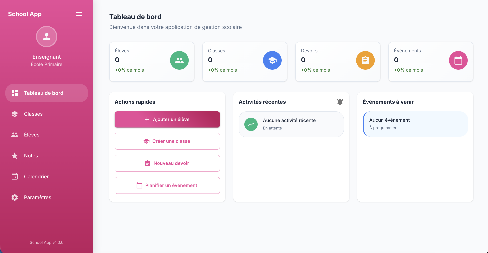
SchoolDesk
Développement d'un logiciel web et Desktop de gestion scolaire.
- Langages : ReactJS, NodeJS, Electron
- Outils : Visual Studio Code, GitHub
- Durée : 150 heures
- En cours de programmation
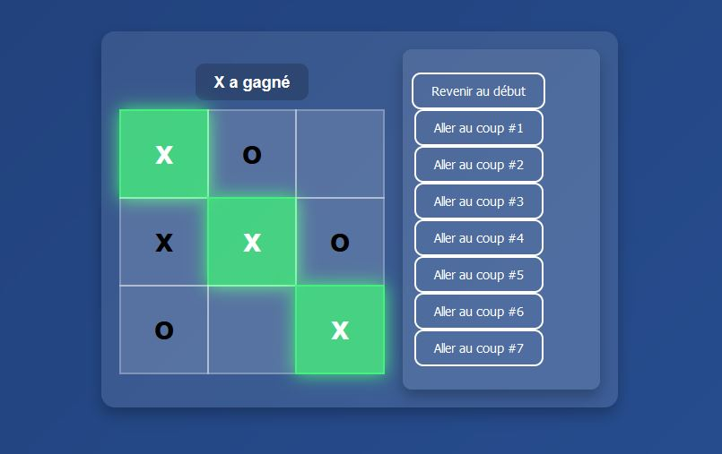
Morpion en ligne
Développement d'un jeu de Tic-Tac-Toe avec la possibilité de visualiser les coups précédents.
- Langages : ReactJS
- Outils : Visual Studio Code
- Durée : 18 heures
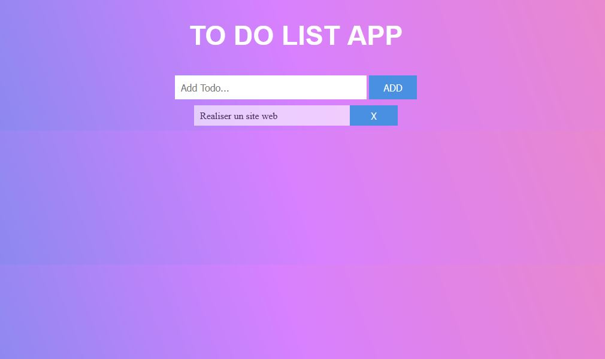
To Do List
Un site web d'une page pour gérer et organiser facilement des tâches à accomplir.
- Langages : HTML, CSS, PHP
- Outils : Visual Studio Code
- Durée : 4 heures
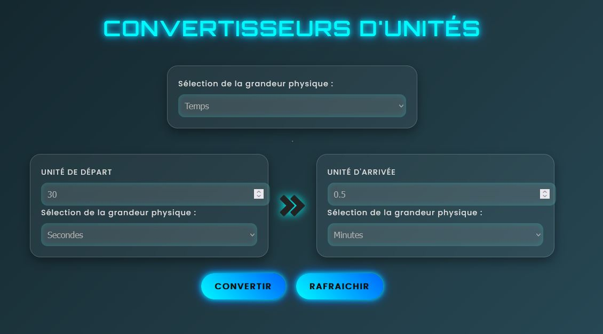
Convertisseurs d'unités
Site web d'une page pour convertir facilement différentes unités
- Langages : HTML, CSS, JavaScript
- Outils : Visual Studio Code
- Durée : 6 heures
📚 Projets Académiques
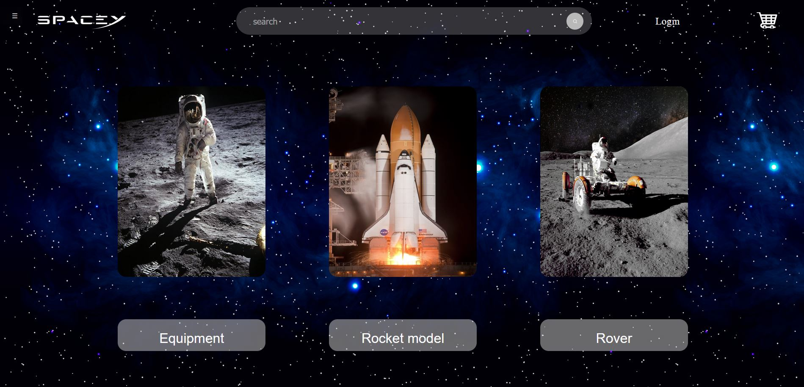
Site Web (SpaceY)
Un site web avec 5 pages, des animations, et un design responsive.
- Langages : HTML, CSS, JavaScript
- Outils : Visual Studio Code, GitLab, Figma
- Durée : 15 heures
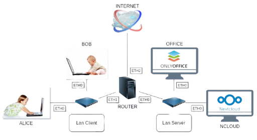
Administration Réseau
Configuration d'un réseau virtuel, gestion des utilisateurs et rédaction d'un tutoriel.
- Outils : NextCloud, Terminal Linux
- Durée : 10 heures
- Travail en équipe
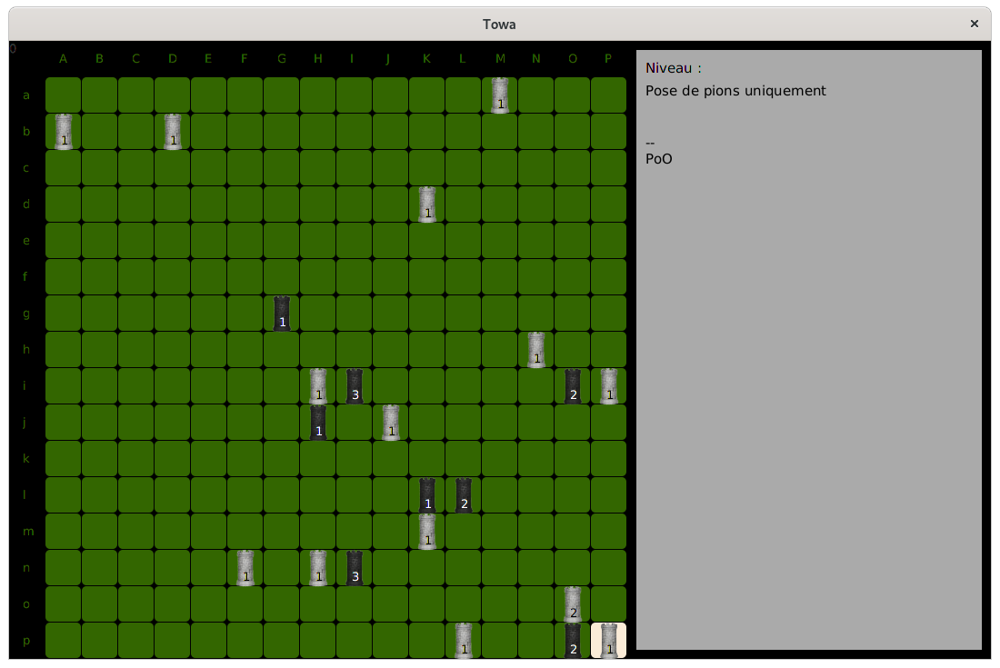
Jeu de Plateau
Développement d'un jeu de plateau avec des niveaux et une IA.
- Langages : Java
- Outils : Netbeans, GitLab
- Durée : 40 heures
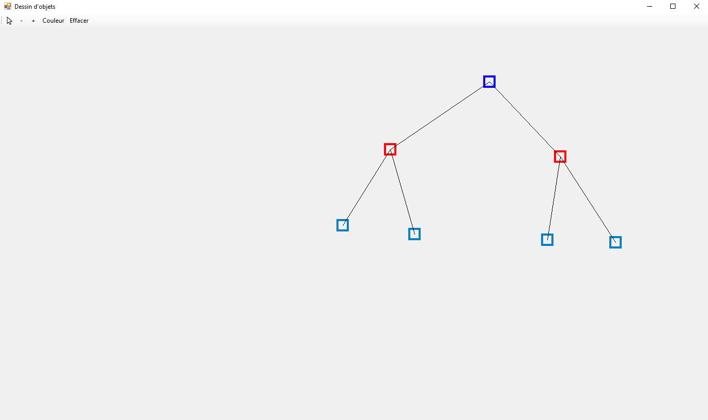
Logiciel de création de Graphe
Application pour visualiser et manipuler des graphes.
- Langages : C#
- Outils : Visual Studio
- Durée : 12 heures
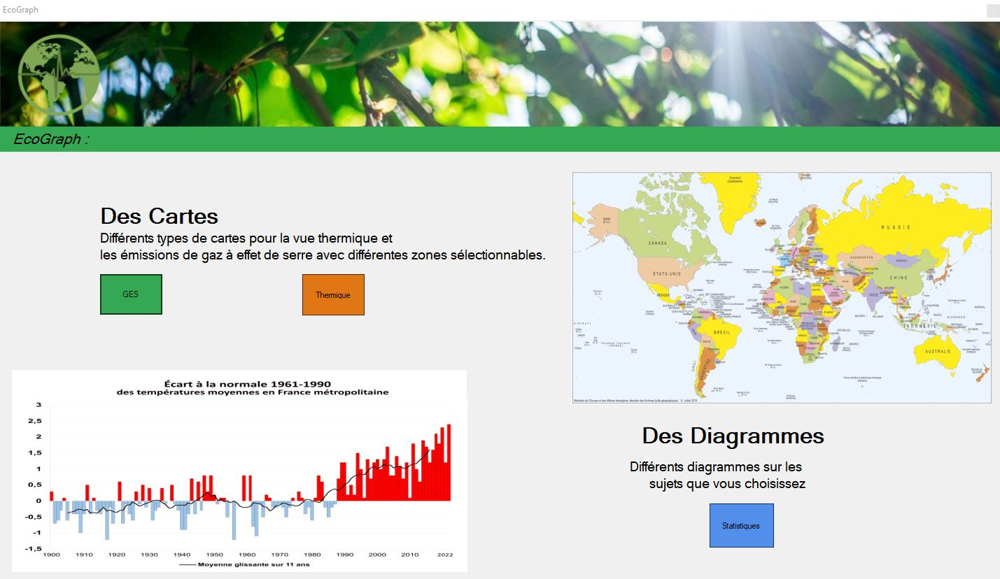
Application Écographe
Développement d'une application pour visualiser des données sur une carte et des graphiques.
- Langages : C#, Python, SQL
- Outils : Visual Studio Code, Visual Studio, GitLab
- Durée : 80 heures
- Travail en équipe
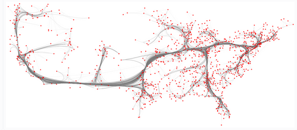
Logiciel de visualisation de Graphe
Développement d'un logiciel pour visualiser et comprendre les données d'un graphe.
- Langages : Java
- Outils : Netbeans
- Durée : 65 heures
- Travail en équipe
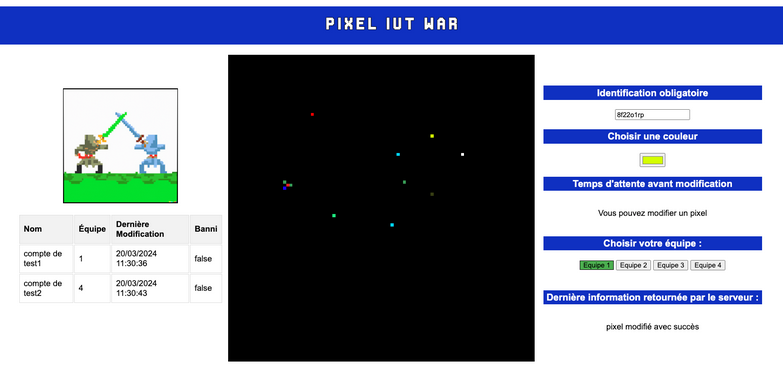
Jeu en ligne (Pixel War)
Développement d'un jeu en ligne pour poser des pixels.
- Langages : JavaScript
- Outils : Visual Studio Code
- Durée : 50 heures